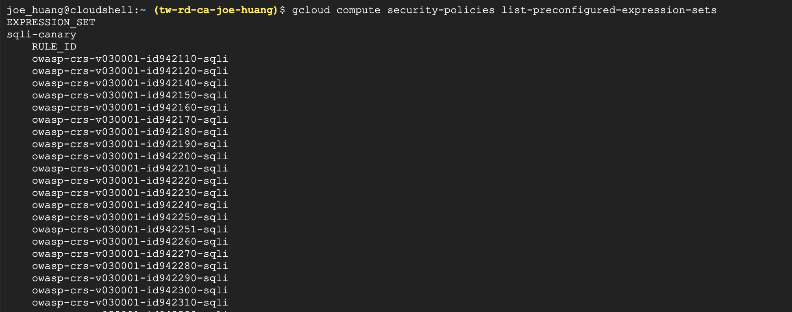

前言
Google Cloud Armor 安全策略，是用以過濾發往外部 HTTP(S) 負載平衡器的傳入流量，透過制定有關安全策略的概念，建立的方式有Google Cloud Console、gcloud 命令行工具或 REST API 創建 Google Cloud Armor 安全策略、規則和表達式。
預定義規則(Preconfigured Rules )的使用，可以體現在初始WAF的採用，原因有二，第一是化被動為主動，減少因被攻擊後再事後撰寫阻擋規則；第二，因為我們不曉得攻擊世界裡的各種手法 e.g., sqli-canary, xss-canary, sessionfixation-stable等，為了強化資安，必須在第一時間就先堆好保壘防禦未來的攻擊行為。
▌1. 預定義規則種類 | Preconfigured Rules
本章節透過文件說明與指令列出預配置規則以查看預定義的應用程序保護規則和簽名 e.g., Google Cloud Armor 提供的 ModSecurity 核心規則集。了解規擇後你可以使用自定義規則語言參考將這些預配置規則添加到新規則或現有規則中。
- Listing available preconfigured rules [1]
- 另一條路custom rules language[3]，支援Attributes, Operations
1. 規擇種類
執行指令$ security-policies list-preconfigured-expression-sets，可以列出完整的規擇集，相較於文件上的內容還要多
1 | #1 list-preconfigured-expression-sets |
2 | gcloud compute security-policies list-preconfigured-expression-sets |
3 | |
4 | #2 Sets of preconfigured rules |
5 | 1. sqli-canary |
6 | 2. xss-canary |
7 | 3. lfi-canary |
8 | 4. rce-canary |
9 | 5. rfi-canary |
10 | 6. sessionfixation-canary |
11 | 7. scannerdetection-canary |
12 | 8. protocolattack-canary |
13 | 9. php-canary |
14 | 10. methodenforcement-canary |
15 | 11. sqli-stable |
16 | 12. xss-stable |
17 | 13. lfi-stable |
18 | 14. rce-stable |
19 | 15. rfi-stable |
20 | 16. sessionfixation-stable |
21 | 17. scannerdetection-stable |
22 | 18. protocolattack-stable |
23 | 19. php-stable |
執行 $security-policies list結果

細看更多的規擇內容
2. 自定規擇 | CUSTOM RULES
- 選擇 preconfigured-expression-sets 是一種方式，另外也可以透過自自定規擇 撰寫正規化表達式，來阻擋攻擊(非本篇文章之重點)
正規化表達式
範例如下
- Allow or deny traffic with a non-empty referer header [4]
1 | https://cloud.google.com/armor/docs/rules-language-reference#allow_or_deny_traffic_with_a_non-empty_referer_header |
▌2. Apply Policies
- 本實作已套用 preconfigured-expression-sets來作演示
- 開啟Cloud Armor 先檢視現有的policies，再加入第三條 policy
step1. 檢視原有Policy: 2條
step2. 加入新的Rules
- 透過SDK
$gcloud compute security-policies - 其中 1002 為序列必須設定
- demo-0504 為policy 名稱
- expression 選擇你要套用的 ‘expression-set’，這邊選擇的是
'protocolattack-stable' - 最後action 要選擇行為 deny 或allow
1 | #1 |
2 | gcloud compute security-policies rules create 1002 \ |
3 | --security-policy demo-0504 \ |
4 | --expression "evaluatePreconfiguredExpr('protocolattack-stable')" \ |
5 | --action deny-403 |
執行結果
注意：筆者套用在command上實現很快，但在Console UI 需要一點時間在同步才能看到最終更新，約3~5分鐘吧
step3. Review 新的規擇
- 透過
$security-policies describe[2]，列出完整的rules 下面套用的policy 有那些
1 | gcloud compute security-policies describe demo-0504 |
執行$security-policies describe 結果
- 看到
'protocolattack-stable'是剛剛加入的第三條規擇
從Console UI 檢視一下rules，也能看到有三條Rules
結論
Google Cloud Armor 是透過制定有關安全策略達到資安保護的概念，但很多時候因不熟悉攻擊行為以致於無法寫出適合的防守規擇，可能導致災難發生。本文使用預定義規則(Preconfigured Rules )的使用，可以體現在初始WAF的採用或在強化現有的規擇集，符合第一時間就先堆好保壘防禦未來的攻擊行為，因為身為IT 的人你必須要假 Hacker永遠在遠方等著你。
Reference
[1] https://cloud.google.com/armor/docs/configure-security-policies#list-preconfig-rules
[2] https://cloud.google.com/armor/docs/configure-security-policies#list-rules
[3] https://cloud.google.com/armor/docs/rules-language-reference